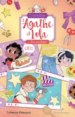
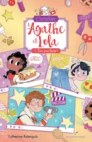

2026
Janvier
-
08 —
Découvertes de séries et retour dans le Monde à l’envers


 Superman & Lois, Shrinking, Stranger Things, Moomins
Superman & Lois, Shrinking, Stranger Things, Moomins -
08 —
Thriller, autobiographie, SF, fantastique, tranche de vie


 Alex (Pierre Lemaitre), Amkoulell l’enfant peul (Amadou Hampaté Bâ), Galamax appelle la Terre ! (Tilde Michels), Dix histoires de Diable (Natalie Babbitt), Le crocodile Génia et ses amis (Edouard Ouspenski), L’étranger (Albert Camus)
Alex (Pierre Lemaitre), Amkoulell l’enfant peul (Amadou Hampaté Bâ), Galamax appelle la Terre ! (Tilde Michels), Dix histoires de Diable (Natalie Babbitt), Le crocodile Génia et ses amis (Edouard Ouspenski), L’étranger (Albert Camus) -
08 —
Nouveaux Poneys de Noël


 La chance passe toujours à Noël, ♡ Papa par intérim à Noël, ♡ La recette d’un Noël parfait, La ballerine de Noël, La danseuse étoile de Noël, ♡ Les couleurs de Noël, Mission Joyeux Noël, Tinsel Town, Merv, ♡ Passion Noël
La chance passe toujours à Noël, ♡ Papa par intérim à Noël, ♡ La recette d’un Noël parfait, La ballerine de Noël, La danseuse étoile de Noël, ♡ Les couleurs de Noël, Mission Joyeux Noël, Tinsel Town, Merv, ♡ Passion Noël -
08 —
Autres films : SF, comédie et action


 Ick, The Astronaut, Y a pas de réseau, The Family Plan 2, Bugonia, Good Fortune, Carry-On
Ick, The Astronaut, Y a pas de réseau, The Family Plan 2, Bugonia, Good Fortune, Carry-On
2025
Novembre
-
16 —
Psychologie, fantastique et romance


 Ce que j’aimerais te dire si je savais trouver les mots, si j’avais plus de temps, si… (Emeric Lebreton), Gardiens des Cités perdues Tome 9.5 Le livre des révélations (Shannon Messenger), Un chat, deux sapins et beaucoup de complications (Myrtille Bastard)
Ce que j’aimerais te dire si je savais trouver les mots, si j’avais plus de temps, si… (Emeric Lebreton), Gardiens des Cités perdues Tome 9.5 Le livre des révélations (Shannon Messenger), Un chat, deux sapins et beaucoup de complications (Myrtille Bastard) -
09 —
Poneys de Noël et autre histoire pas sur l’amour


 Une famille cinq étoiles pour Noël, À la recherche de mon ange gardien, Belles-mères Noël, Mon cher Père Noël, La grande course de Noël, Un Noël hors du temps, Notre miracle de Noël, Le trésor de Noël, ♡ Une victoire pour Noël, La guerre des Rose
Une famille cinq étoiles pour Noël, À la recherche de mon ange gardien, Belles-mères Noël, Mon cher Père Noël, La grande course de Noël, Un Noël hors du temps, Notre miracle de Noël, Le trésor de Noël, ♡ Une victoire pour Noël, La guerre des Rose
Octobre
-
25 —
Enquête surnaturelle, psychologie et histoires pour enfants


 Krine : Le maître des hybrides (Stéphane Tamaillon), ♡ Ainsi gèlent les bulles de savon (Marie Vareille), Le rêve d’un homme ridicule (Dostoïevski), Le menu olympique de Marceau Bonappétit (Brigitte Boucher), Sam le ballerin aquatique (Sybella Chopinet)
Krine : Le maître des hybrides (Stéphane Tamaillon), ♡ Ainsi gèlent les bulles de savon (Marie Vareille), Le rêve d’un homme ridicule (Dostoïevski), Le menu olympique de Marceau Bonappétit (Brigitte Boucher), Sam le ballerin aquatique (Sybella Chopinet) -
25 —
Comédies, comédies dramatiques, romance, aventure, thriller, horreur


 Harold et Kumar chassent le burger, Harold et Kumar s’évadent de Guantanamo, Le Joyeux Noël d’Harold et Kumar, Les deux Gredins, Community, A big bold beautiful journey, ♡ Caramelo, Chosen family, Twinless, HPI (saison 5), French lover, Monster summer, La disparue de la cabine 10, Mercredi (saison 2), Conjuring : L’heure du Jugement
Harold et Kumar chassent le burger, Harold et Kumar s’évadent de Guantanamo, Le Joyeux Noël d’Harold et Kumar, Les deux Gredins, Community, A big bold beautiful journey, ♡ Caramelo, Chosen family, Twinless, HPI (saison 5), French lover, Monster summer, La disparue de la cabine 10, Mercredi (saison 2), Conjuring : L’heure du Jugement
Septembre


Août
-
17 —
Essai politique, romance en manga et enquêtes surnaturelles


 Jojo, le gilet jaune (Danièle Sallenave), Toi et moi, jamais (Mayu Sakai), Krine : Les pilleurs de cercueils, Krine : L'affaire Jonathan Harker (Stéphane Tamaillon)
Jojo, le gilet jaune (Danièle Sallenave), Toi et moi, jamais (Mayu Sakai), Krine : Les pilleurs de cercueils, Krine : L'affaire Jonathan Harker (Stéphane Tamaillon) -
16 —
Romance, comédie et aventures


 Betty : la chance de sa vie, Bridget Jones : folle de lui, Ruby à tout prix, Les condés, Dora : à la recherche du Sol Dorado, Dragons, Pirates des Caraïbes : la malédiction du Black Pearl, Pirates des Caraïbes : le secret du coffre maudit, Pirates des Caraïbes : jusqu'au bout du monde
Betty : la chance de sa vie, Bridget Jones : folle de lui, Ruby à tout prix, Les condés, Dora : à la recherche du Sol Dorado, Dragons, Pirates des Caraïbes : la malédiction du Black Pearl, Pirates des Caraïbes : le secret du coffre maudit, Pirates des Caraïbes : jusqu'au bout du monde -
15 —
 Vacances en Bretagne du 27/07/2025 au 12/08/2025
Vacances en Bretagne du 27/07/2025 au 12/08/2025
Juillet

Juin
-
09 —
Séries sur des Cold case, des urgences, une dystopie et de la comédie en animation


 Black Snow, 9 ⸱ 1 ⸱ 1, Severance, Astérix et Obélix – Le combat des chefs
Black Snow, 9 ⸱ 1 ⸱ 1, Severance, Astérix et Obélix – Le combat des chefs - 09 — Balade à Thueyts (30/05/2025) et au Mont Dore (08/06/2025)
-
06 —
Magie, tranche de vie et aventures


 Blanche Neige, Minecraft – Le film, Jane Austen a gâché ma vie, RTT, Les aventures de Tintin – Le secret de la Licorne
Blanche Neige, Minecraft – Le film, Jane Austen a gâché ma vie, RTT, Les aventures de Tintin – Le secret de la Licorne -
01 —
Bandes dessinées entre subtilité et sujet intense, roman jeunesse
 Les fleurs de grand frère (Gaëlle Geniller), ♡ Racines (Lou Lubie), Le maître des clés – Le pays des songes (Benoit Grelaaud)
Les fleurs de grand frère (Gaëlle Geniller), ♡ Racines (Lou Lubie), Le maître des clés – Le pays des songes (Benoit Grelaaud)
Mai
Avril
- 19 — Essai à la guitare 🎶
-
15 —
Livres jeunesse


 Tintin au Tibet (Hergé), Pierre Lapin (Beatrix Potter), ♡ Le mystère du lac (Jason Pamment), La brigade des cauchemars - T.1 Sarah (Franck Thilliez, Yomgui Dumont et Drac), L’atelier d’Agathe et Lola - 2.Tous pour Benji ! (Catherine Kalengula)
Tintin au Tibet (Hergé), Pierre Lapin (Beatrix Potter), ♡ Le mystère du lac (Jason Pamment), La brigade des cauchemars - T.1 Sarah (Franck Thilliez, Yomgui Dumont et Drac), L’atelier d’Agathe et Lola - 2.Tous pour Benji ! (Catherine Kalengula)